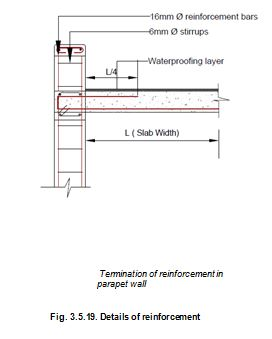

Let us take example of an Anganwadi building. We will use Confined Masonry system of construction. We will embed masonry of the building horizontally and vertically by RCC components called Tie columns and bond beams. Tie columns are provided at every corner, not exceeding the spacing of 4000mm. When unsupported walls are longer than 4000 mm, provide additional Tie Columns to limit spacing. The Tie columns start from foundations and are anchored into the roof slab. If sloping roof is to be provided The tie columns are anchored in to the Roof Bond beam. In case of Gabled roof, Tie column steel bars go at least 600mm in to the RCC Gable band.
1. First dig foundation trenches minimum 600mm deep and 750 mm wide in normal soil or as per ground condition given on the next page. If the site remains flooded by water for more than 3 days or has low bearing capacity, increase foundation width and depth under guidance of engineer in-charge.
2. Ram the foundation base to obtain a level surface.
3.Provide a 150 mm thick layer of PLAN cement concrete (1 cement: 4 sand: 8, 40mm size stone aggregate/gravel) and obtain a level surface. Never refill excavated soil back into the trenches to get a level surface.
Note:
Keep in mind that the dug earth should be placed at least 450mm away from the trenches.
4. Place steel bars of Tie Columns (230x230mm with 4 nos 12 mm dia bars) at every corner and wall junction. Place steel bars of two RCC tie columns of the hall. This column is 230mmx230mm size and has 8 bars 12mm dia.
Note:
Keep in mind that the spacing between the tie columns must not be more than 4000mm.
5. Alternatively, brick/Concrete Block/Coursed Rubble masonry in Foundation and plinth in cement mortar (1:6 or cement concrete in 10mm down stone aggregate 1:4:8) can be made.
6. After reaching a level 150 mm below the plinth level, we will provide Tie beam 230x200 mm size with 4 no.s 12mm diameter TMT bars (See figure) passing through every tie column and the two RCC columns.
7. Carry out masonry work in 1:6 cement: sand mortar in between the tie columns by providing 40mm toothing grooves in masonry.
8. Provide shutters on two faces of the tie columns, properly fixed to the plinth masonry.
9. Pore concrete (M20 grade) in tie column to make a good bond between the masonry and the concrete columns without disturbing the masonry.
10.The main wall foundations and Tie column footings are constructed simultaneously.
Note:
See that the toothing of the brick masonry goes into the cement concrete of the tie columns to make a good joint.
11. Provide 4nos of 10d bar in bond beam having section as shown and cast the concrete .
12. After casting the bond beam, fine sand filling shall be done up to plinth level in a layer of 300mm which shall be well compacted with maximum 15% moisture content.
Note:
● Do not floor water in back fill.
● Cast all the Bond beams in one go.
● After the Bond Beams have been cast, water cure for at least 14 days. Masonry in superstructure can be started after 1 days.
13. You have vertical steel bars of tie- columns coming from every corner and so also steel bars of the two main RCC columns. Now place Door frames so that the steel holdfasts attached to the lower end go into the bond beam, the middle holdfasts will go in to RCC Sill band.
14. Construct all the masonry walls by leaving grooves at tie columns ends max. upto 1200mm (4’) at one go.
15. Complete masonry from plinth level to window sill level leaving gaps for Tie column steel bars coming from the foundation.
16. Now fill M20 grade cement concrete in to the gaps up to window sill level. Now place the window frames. The lower holdfasts of the window frame and middle holdfasts of door frames shall be embedded in to the RCC sill band. Now fix shuttering planks on two sides of the walls.
17. Provide the shutters at side faces at sill level and place the reinforcement of bond beam and pore the M20 grade concrete.
18. Care should be taken that bond beam reinforcement and passing through the tie column longitudinal bars.
Note:
Provide Sill band reinforcement as detailed below. It consists of 2 nos 12 mm dia bars with 6/8mm dia links spaced about 200mm c/c.
19. Repeat the masonry wall construction by leaving the gap for openings and column up-to lintel level.
over opening, depending upon the width of opening.
22. Similarly, in chhajja projection, reinforcement need to be properly anchore20. Again provide shutter and lay the reinforcement cage and cast concrete as lintel band beam.
21. Care should be taken to provide additional reinforcement in band beam d to lintel bond beam reinforcement.
23. Again perform spandrel masonry work over Lintel Bond Beam in similar fashion as explained earlier.
NOTE:
If it is expected that first floor will be constructed in future , the bars shall go into the parapet wall at least 500 mm. Later these bars will be extended by welding new bars for making the first floor just as we made the ground floor.

24. We will take advantage of the slab thickness and make a beam that projects 200mm below the slab but is actually 300mm deep including the slab thickness. The beam shall be 230mm wide below the roof slab. (Fig.3.5.16)
25. Provide 3 nos 16mm dia bars at the bottom and 2 nos 16mm dia hanger bars at the top. The middle 16mm dia bar shall be cranked at L/7 from each end. Provide 6/8 mm dia stirrups at 200mm c/c .
Note:
● Bars in the slab are TMT 10mm dia bars 120 mm c/c both ways. Alternate bar shall crank at L/7 both ways.
● Also, provide electric conduit pipes and fan hooks in the beam if needed.
● The reinforcing bars in Roof Bond beam are same as in the Plinth Bond beam ie 4 nos 12mm dia bars (2 at bottom and 2 at the top bound by 6/8mm dia rings at 200mm c/c.
● Now our structure is ready.
●Finish the structure by cement plaster inside and outside. You may like to have your external block masonry finished with pointing.
● Fix doors and window shutters as per your liking and needs.
●If you are making roof parapet, then also provide a waterproofing treatment on the RCC slab. Also make arrangement of disposal of rain water by making slopes in the roof and providing rain water pipes
●The minimum 1:150 slope to be provided to roof after water proofing treatment.
●Similarly, one 4”(100mm/0 dia. Rain water disposal pipe to be provided for every 520 sq. ft. plan area of roof.
●Provide a floor as per your needs . Provide steps to enter and exist. Provide glazed tiles in toilet area, else provide neat cement over fresh cement plaster. Make arrangements of water supply before plaster work is complete. Make arrangements for disposal of waste water and sewage. Provide electric points as per your need. parapet make sure to provide stairs to reach the roof for occasional cleaning and general maintenance.
● If you are providing roof
Alternatively: